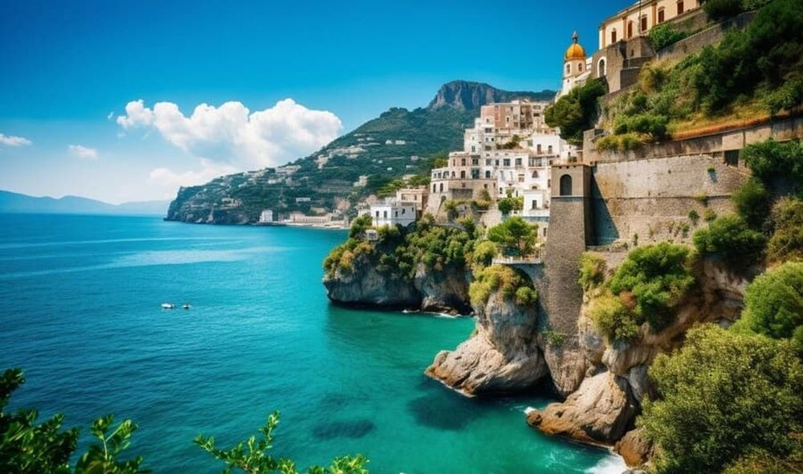

Descoperă Portofino - Bijuterie pitorească de pe coasta italiană
Portofino este un sat de coastă fermecător din Italia, celebru pentru peisajele sale idilice și eleganța sa:
-

Portul - Căutare de lux
Un port pitoresc, plin de iahturi luxoase și restaurante rafinate, creând o atmosferă sofisticată.
-

Castelul Brown - Panorama fermecătoare
O fortăreață din secolul al XVI-lea cu grădini frumoase, oferind vederi spectaculoase asupra Golfului Tigullio.
-

Biserica San Martino - Liniște spirituală
O biserică veche în stil romanic, oferind o atmosferă de liniște și o vedere minunată asupra orașului.
-

Peisaje naturale - Frumusețe autentică
Împrejurimile sunt perfecte pentru drumeții, oferind priveliști impresionante și plaje pitorești.
-

Cumpărături elegante - Modele italiene
Magazinele exclusiviste oferă posibilitatea de a achiziționa haine și accesorii de designer.
Concluzii
Portofino îți oferă o experiență de neuitat a stilului italian, cu peisaje spectaculoase și o atmosferă relaxată.